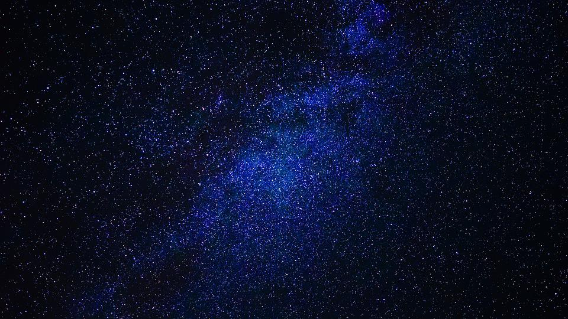

Web-tekniikka
Tälle sivulle olen kasannut kaikki palautettavat osat, jotka ovat:
Github, Bootstrap, CSS/LESS/SASS, Bootsrap-sivustolla edistyneempien tyyliominaisuuksien käyttö, Javascript sekä sivun julkaisu
Kerli Nurk
Oulun ammattikorkeakoulu